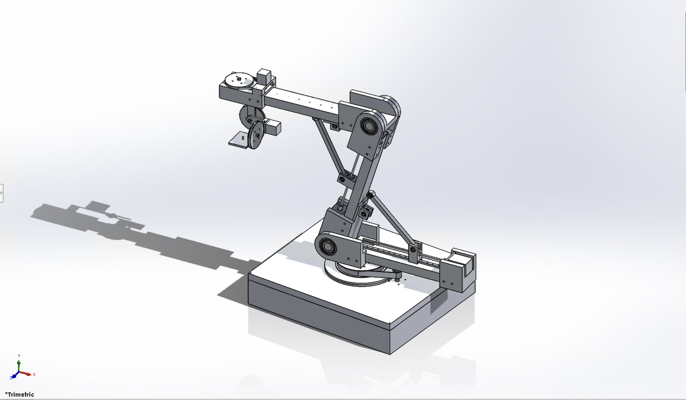
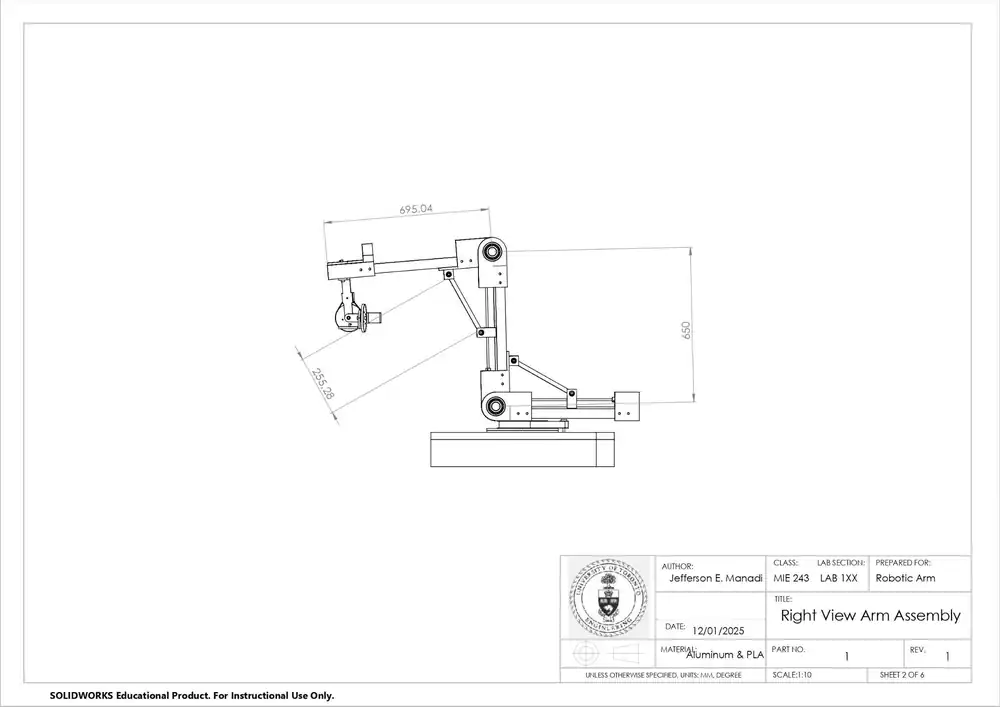
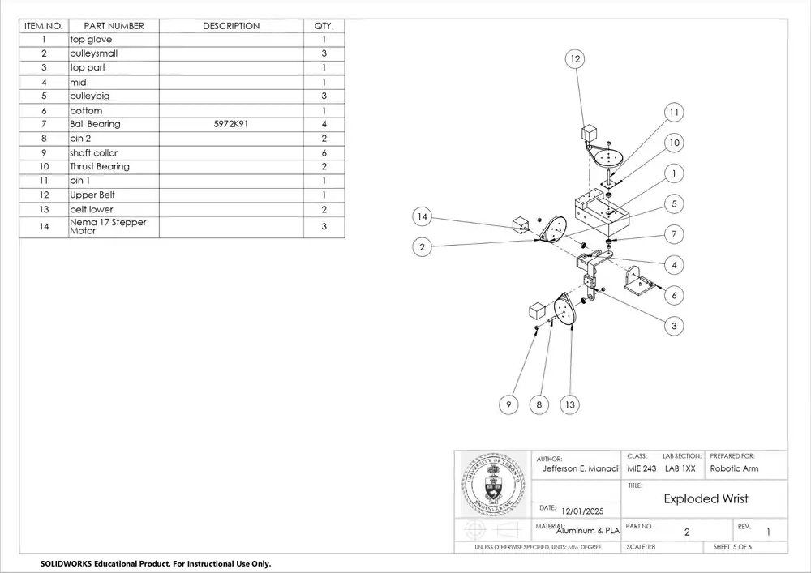

Our MIE243 team wanted to design a six-axis camera arm for beginner filmmakers. We set a target payload of 1.5 kg and wanted to keep the cost down.
Could we move a camera through six axes on a beginner’s budget?
These are the targets and estimates from our final design. This was a class design project, not a built or tested camera rig.
When we compared concepts, I kept coming back to the shoulder and elbow. Those joints had to lift the camera and parts of the arm, and I expected a direct-drive design to need higher-torque motors.
I brought a lead-screw linkage to the team and led the push to use it at those two joints. The screw moves a sliding block that pivots the joint. I was willing to give up some speed to get more mechanical advantage where the arm needed it.
At the wrist, we used timing-belt reductions. The belts were easier to route and package for continuous wrist rotation.
These drawings from our SOLIDWORKS package show how the mechanisms fit together, including the belt-and-pulley wrist. Click a drawing to open it full size.


The final design had six axes and a maximum reach of 1.2 m. We estimated CAD 814 for the design before electronics.